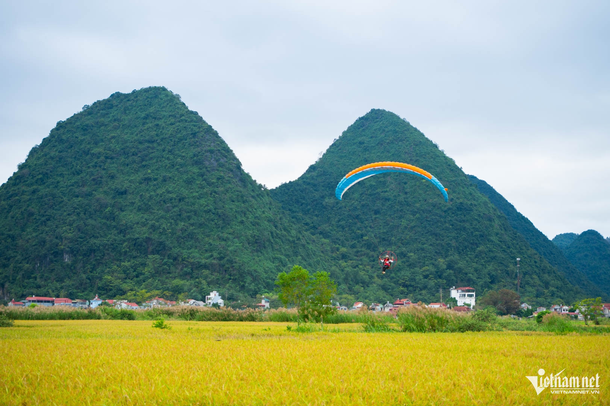
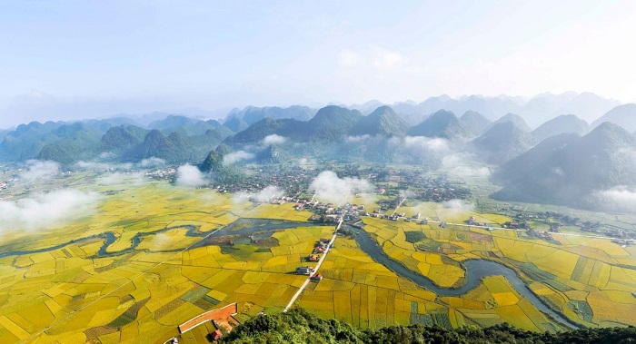
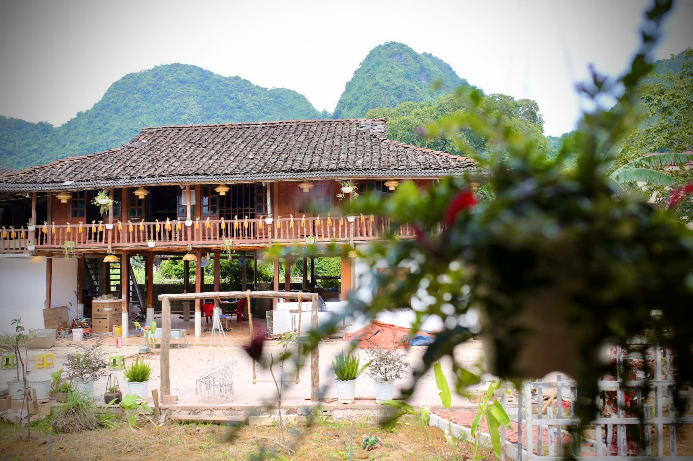

DU LỊCH QUỲNH SƠN
Bắc Sơn – Từ vùng đất cách mạng đến Làng du lịch cộng đồng Quỳnh Sơn
Giữa vùng núi Đông Bắc Việt Nam, Bắc Sơn là một vùng đất mang trong mình cả chiều sâu lịch sử, vẻ đẹp của núi rừng và một không gian văn hóa Tày đặc sắc.
Ngày nay, trên chính vùng đất giàu truyền thống ấy, Làng du lịch cộng đồng Quỳnh Sơn đang trở thành một điểm đến nổi bật, nơi du khách có thể tìm thấy những ngôi nhà sàn truyền thống, mái ngói âm dương, văn hóa Tày, ẩm thực bản địa và cảnh quan thung lũng Bắc Sơn.

Bắc Sơn nằm ở phía Tây Nam tỉnh Lạng Sơn, trong không gian địa hình đặc trưng của vùng Đông Bắc với những dãy núi đá vôi bao quanh các thung lũng, cánh đồng và bản làng. Từ trung tâm thành phố Lạng Sơn đến Bắc Sơn khoảng 85 km theo thông tin của địa phương, trong khi khu vực Quỳnh Sơn được một số tài liệu du lịch giới thiệu cách thành phố Lạng Sơn khoảng 80 km. Từ Hà Nội đến Bắc Sơn khoảng 160 km tùy theo điểm xuất phát và cung đường di chuyển.
Sự kết hợp giữa núi đá, đồng ruộng, dòng suối và những ngôi nhà sàn đã tạo nên diện mạo rất riêng của vùng đất này. Nhưng Bắc Sơn không chỉ được nhớ đến bởi cảnh quan. Đây còn là nơi lưu giữ một dấu mốc quan trọng trong lịch sử cách mạng Việt Nam.
Ngày 27 tháng 9 năm 1940, cuộc Khởi nghĩa Bắc Sơn bùng nổ trong bối cảnh tình hình tại Lạng Sơn và Đông Dương có nhiều biến động. Tối hôm đó, quân và dân Bắc Sơn tiến công đồn Mỏ Nhài, một trong những trung tâm cai trị của thực dân phong kiến tại địa phương. Cuộc khởi nghĩa đã trở thành một dấu mốc quan trọng trong lịch sử cách mạng Việt Nam.
Ngày nay, những câu chuyện về cuộc khởi nghĩa vẫn được lưu giữ trong không gian lịch sử của Bắc Sơn. Bảo tàng Khởi nghĩa Bắc Sơn là nơi giới thiệu nhiều tài liệu, hình ảnh và hiện vật liên quan đến sự kiện năm 1940 cũng như truyền thống cách mạng của địa phương. Vì vậy, một chuyến đi về Bắc Sơn có thể bắt đầu bằng việc tìm hiểu lịch sử trước khi tiếp tục khám phá thiên nhiên và đời sống của vùng đất này.
Rời những địa danh lịch sử, hành trình mở ra giữa thung lũng Bắc Sơn – nơi những dãy núi đá vôi bao quanh những cánh đồng và bản làng phía dưới. Từ trên cao nhìn xuống, những thửa ruộng thay đổi màu sắc theo mùa, xen giữa là những con đường nhỏ, dòng suối và những mái nhà sàn nằm bình yên dưới chân núi.
Một trong những điểm nhìn nổi tiếng của Bắc Sơn là đỉnh Nà Lay, nơi có thể quan sát toàn cảnh thung lũng từ trên cao. Từ đây, những cánh đồng, bản làng và các dãy núi nối tiếp nhau tạo thành một không gian rộng lớn. Và giữa không gian ấy là Quỳnh Sơn – một ngôi làng đã gắn bó lâu đời với vùng thung lũng Bắc Sơn.

Quỳnh Sơn là nơi cộng đồng người Tày sinh sống và gìn giữ nhiều nét văn hóa truyền thống. Điểm khiến ngôi làng tạo ấn tượng ngay từ cái nhìn đầu tiên chính là những ngôi nhà sàn nối tiếp nhau trong không gian bản làng. Theo các thông tin được giới thiệu về Quỳnh Sơn, trong làng có hơn 400 ngôi nhà sàn truyền thống.
Những ngôi nhà chủ yếu được làm bằng gỗ và lợp mái ngói âm dương. Theo thông tin của tỉnh Lạng Sơn, hơn 400 ngôi nhà sàn trong làng có cửa quay về hướng Nam. Sự thống nhất trong cách bố trí tạo nên một diện mạo đặc biệt cho cả bản làng, đồng thời giúp những ngôi nhà hòa mình với cảnh quan tự nhiên xung quanh.
Điều đáng quý ở Quỳnh Sơn là những ngôi nhà ấy không được dựng lên chỉ để phục vụ khách du lịch. Đây vẫn là nơi người dân sinh sống, làm việc, gìn giữ phong tục và truyền lại những giá trị văn hóa cho các thế hệ sau. Những con đường làng, ruộng đồng, mái nhà, bữa cơm và những sinh hoạt hàng ngày cùng tạo nên một không gian du lịch cộng đồng chân thực.
Một nét đặc biệt khác của Quỳnh Sơn là sự gắn kết dòng họ. Theo thông tin của tỉnh Lạng Sơn, người dân trong làng mang cùng họ Dương. Đặc điểm này góp phần tạo nên mối liên hệ cộng đồng rất riêng, thể hiện qua đời sống làng bản và cách người dân cùng nhau gìn giữ không gian văn hóa của quê hương.
Cùng với nhà sàn, những mái ngói âm dương cũng là một phần quan trọng tạo nên hình ảnh Quỳnh Sơn. Từ đất sét, qua các công đoạn tạo khuôn, phơi và nung, những viên ngói truyền thống được tạo ra để lợp mái nhà. Nghề làm ngói vì thế không chỉ là một nghề thủ công mà còn góp phần bảo tồn diện mạo kiến trúc của làng.
Nếu muốn nhìn Quỳnh Sơn từ một góc khác, Nà Lay là một điểm đến không thể bỏ qua trong hành trình khám phá Bắc Sơn. Với độ cao trên 600 mét, từ đỉnh núi có thể phóng tầm mắt xuống thung lũng rộng lớn bên dưới. Những mái nhà sàn nằm xen giữa ruộng đồng, những con đường nhỏ chạy qua các bản làng và những dãy núi đá vôi bao quanh tạo nên một bức tranh đặc trưng của Bắc Sơn.
Những giá trị về cảnh quan, văn hóa và đời sống cộng đồng cũng giúp Quỳnh Sơn ngày càng được biết đến rộng rãi hơn. Ngày 17 tháng 10 năm 2025, Tổ chức Du lịch Liên Hợp Quốc (UN Tourism) công bố danh sách Best Tourism Villages 2025 và Quỳnh Sơn được lựa chọn trong danh sách những làng du lịch tiêu biểu của năm.
Theo thông tin từ chương trình, năm 2025 có hơn 270 hồ sơ đến từ 65 quốc gia tham gia xét chọn và 52 cộng đồng được công nhận. Với Quỳnh Sơn, sự ghi nhận này gắn với những giá trị mà cộng đồng đang gìn giữ, từ văn hóa truyền thống, cảnh quan nông thôn đến đời sống cộng đồng và định hướng phát triển du lịch bền vững.
Đến Quỳnh Sơn hôm nay, một chuyến đi có thể bắt đầu từ những câu chuyện về Khởi nghĩa Bắc Sơn, tiếp tục qua thung lũng, lên Nà Lay để nhìn toàn cảnh vùng đất rồi trở về những con đường nhỏ trong làng. Ở đó, lịch sử không chỉ nằm trong những trang sách, văn hóa không chỉ được tìm thấy trong bảo tàng và du lịch không chỉ là việc đứng ngắm cảnh.

Tất cả hòa vào đời sống của cộng đồng. Một bữa cơm địa phương, một mái nhà sàn, một con đường làng hay câu chuyện của người dân đều có thể trở thành một phần của hành trình khám phá.
Bắc Sơn có câu chuyện của một vùng đất cách mạng. Quỳnh Sơn có câu chuyện của một ngôi làng Tày. Và hôm nay, cả hai đang cùng tạo nên một điểm đến đặc biệt của Lạng Sơn – nơi lịch sử, thiên nhiên, văn hóa và đời sống cộng đồng gặp nhau.
Những homestay trong làng giúp du khách có thêm thời gian ở lại để cảm nhận cuộc sống bản địa. Thay vì chỉ ghé qua trong ngày, du khách có thể nghỉ lại trong nhà sàn, thưởng thức ẩm thực địa phương, trò chuyện cùng người dân và tiếp tục khám phá Quỳnh Sơn cũng như những vùng đất xung quanh.
Đó cũng là cách Dương Gia Đạt Homestay mong muốn đồng hành cùng những người tìm đến Quỳnh Sơn – không chỉ cung cấp một nơi nghỉ chân, mà còn là một điểm dừng để du khách có thêm thời gian cảm nhận không gian nhà sàn, văn hóa Tày và cuộc sống bình dị giữa thung lũng Bắc Sơn.
Bắc Sơn – Quỳnh Sơn đang chờ những bước chân tìm đến. Từ dấu mốc lịch sử ngày 27 tháng 9 năm 1940, những dãy núi đá vôi và thung lũng rộng mở, đến những ngôi nhà sàn, mái ngói âm dương, đỉnh Nà Lay và đời sống văn hóa của cộng đồng người Tày, mỗi nơi đều góp thêm một câu chuyện cho hành trình khám phá. Hãy đến Quỳnh Sơn để không chỉ nhìn thấy Bắc Sơn, mà còn sống cùng Bắc Sơn.
LƯU TRÚ
Dương Gia Đạt Homestay – điểm dừng chân tại Quỳnh Sơn
Nếu muốn ở lại lâu hơn để cảm nhận cuộc sống bản làng, du khách có thể lựa chọn các homestay trong Làng du lịch cộng đồng Quỳnh Sơn, trải nghiệm nhà sàn, thưởng thức ẩm thực địa phương và tìm hiểu đời sống của người Tày.
Dương Gia Đạt Homestay nằm trong không gian Quỳnh Sơn, là một điểm dừng chân để du khách tiếp tục hành trình khám phá Bắc Sơn và Làng du lịch cộng đồng Quỳnh Sơn.
XEM KHÔNG GIAN LƯU TRÚBẮC SƠN – QUỲNH SƠN
Bắc Sơn – Quỳnh Sơn đang chờ bạn khám phá
Từ một vùng đất ghi dấu Khởi nghĩa Bắc Sơn ngày 27/9/1940, đến thung lũng núi đá vôi, những mái nhà sàn ngói âm dương, đỉnh Nà Lay và cộng đồng người Tày giàu bản sắc – Bắc Sơn hôm nay mang đến một hành trình kết nối giữa lịch sử, thiên nhiên, văn hóa và đời sống bản địa.
Và ở trung tâm của hành trình ấy, Quỳnh Sơn – Làng Du lịch tốt nhất năm 2025 của UN Tourism – đang mở ra một cách khám phá Bắc Sơn gần gũi và chân thực hơn.
Hãy đến Quỳnh Sơn để không chỉ nhìn thấy Bắc Sơn, mà còn sống cùng Bắc Sơn.
Hẹn gặp bạn tại Quỳnh Sơn
Hãy đến Dương Gia Đạt Homestay để khám phá Quỳnh Sơn, trải nghiệm văn hóa Tày và tận hưởng những ngày bình yên giữa núi rừng Bắc Sơn.